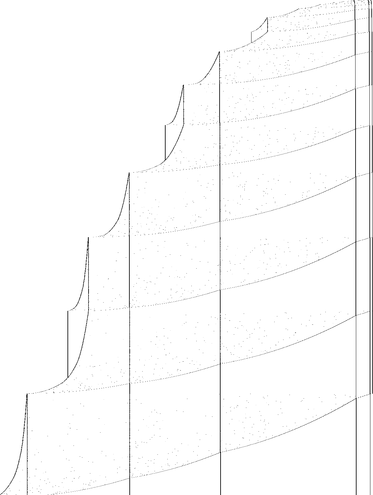

Busy Beaver Explorer / holdouts / 1RB0LE_1RC0LB_1RD0RC_1LA1RC_---1LF_1LB1LD / explained
A 6-state Busy Beaver machine · Status as of 9 November 2026.1RB0LE_1RC0LB_1RD0RC_1LA1RC_---1LF_1LB1LD
Nobody knows, but it almost certainly never stops. This machine runs a Collatz-like rule: a number A on the tape is multiplied by 3/2 and topped up by a constant g that encodes a list of older numbers, and when the parity is wrong, A is filed away onto the list and a new, smaller A starts.
Each entry says what to write, which way to move and which state to enter. The machine starts in A on a blank tape (all 0s).
The machine stops when it is in E reading 0. E is entered only from A1 (writes 0, moves L): 0 A>1. So a halt is the moment this pattern appears, with the head on the cell after >.
| state | reads 0 | reads 1 |
|---|---|---|
| A | 1 R B | 0 L E |
| B | 1 R C | 0 L B |
| C | 1 R D | 0 R C |
| D | 1 L A | 1 R C |
| E | halt | 1 L F |
| F | 1 L B | 1 L D |
read:write move. Red marks a halting transition. Hover a state or a row to single out its arrows.This is the real machine, simulated in your browser. Step it, play it, or jump to a step count. Below the cells is the whole visited tape in the notation of the notes: 1^5 is five 1s, and C>0 is the head in state C on a 0.
The diagram stacks the tape at many moments. Sampling at each new cell shows the shape of the run as the visited region grows; sampling evenly in time shows where the head spends its time. The records list every step at which the head reaches a cell no earlier step reached, with the side, the width so far and the whole tape: the first place to look for a repeating macro structure.

1101), dark at block boundaries. Vertical lines are boundaries between frozen blocks; the curves are the marker and the counter moving through.Between two rests the tape reads B>1 (1101)^c 0 (1101)^a 0 … (1101)^z 0 0 (1101)^y 0 …: a counter block c at the left, the list of blocks, and a marker 00 inside the list. Each round trip of the head moves copies of 1101 across the marker:
| phase | what one round trip does | proved |
|---|---|---|
| counting, depth k | the marker starts in the last block and moves left; 6·2k copies cross it per unit added to the counter (k = blocks between counter and marker) | u0_* (depth 0) |
| transfer | the counter, now a block of about 4c, loses 2 copies per half trip while the block right of the marker gains 3 | t_one, t_two |
A block b at depth k adds about b/(6·2k) to the counter, and the transfer phase pays out 3/2 for each copy; together this is the map below, with the whole list summed up in one number g = 6 + b1/2 + b2/4 + ….
| rest | condition | next rest |
|---|---|---|
| type 000, A | A+g even | type 000, (3A+g)/2 |
| type 000, A | A+g = 1 mod 4 | push A+1; type 000, (A+g−5)/4 |
| type 000, A | A+g = 3 mod 4 | push A+1; type 0, (A+g+1)/4 |
| type 0, A | A+g odd | type 0, (3A+g−3)/2 |
| type 0, A | A+g even | type 000, (3A+g−6)/2 |
A push puts the block A+1 at the front of the list, so g becomes (A+g+7)/2. From blank tape the first rest is type 0 with A = 3 and an empty list (g = 6):
| rest | type | A | g | |
|---|---|---|---|---|
| 1–8 | 0, 0, 000, 0, 0, 0, 000, 000 | 3, 6, 9, 4, 10, 19, 31, 52 | 6 → 11 | push at 4 |
| 9–15 | 0 … 000 | 16, 40, 76, 130, 211, 331, 514 | 35 | push at 9 |
| 33–36 | 0, 0, 0, 000 | 3220, 8050, 15295, 26161 | 6443 | rest 35 at 9.79·109 steps |
Without a push the size A+g grows by half; a push (a third of the rests) shrinks it to about three quarters. The machine halts only from A = 0 with an empty list, so it would need this random-looking walk to come all the way back down; with the strong upward drift that has odds of order 10−10.
While the marker 00 works its way through the list, the single 0s between the blocks quietly become the bits of a binary counter. Each time the head comes back from the marker it looks at the gaps, deepest first. A gap showing 0 is set to 1 and the head turns back to the marker. A gap showing 1 is reset to 0 and the head keeps going: that is the carry. Only when the carry runs off the end does the counter at the left end go up by one.
| blocks between counter and marker | 0 | 1 | 2 | k |
|---|---|---|---|---|
| trips to the marker per unit | 1 | 2 | 4 | 2k |
| copies of 1101 moved per unit | 6 | 12 | 24 | 6·2k |
This is why block number k enters the map only through bk/2k. The rules for 0 to 3 blocks are proved in Lean. A proof for every k would go by induction over this counter, and it is the first missing piece of a proof of the whole map.
Left of the start, the visited part of the tape grows like the square root of the step count, the signature of a head sweeping back and forth across the whole tape and adding a cell or a few at the end of each sweep (a bouncer-like shape) (fitted exponent 0.542). Right of the start it grows like the logarithm of the step count: each new cell costs a roughly constant factor more time, the signature of a counter or of a Collatz-like map whose values are written on the tape (fitted exponent 0.14).
After 109 steps the tape spans 37,407 cells (27,589 left of the start, 77 right), with a density of 1s of 0.734.
The tape (run-length coded, 1^5 is five 1s, C>0 the head in state C on a 0) at some of the last moments the head reached a new cell, cut to 400 characters:
| side | step | tape |
|---|---|---|
| left | 968,539,621 | B>0 0^2 1^2 0 1^3 0 1^3 0 1^3 0 1^3 0 1^3 0 1^3 0 1^3 0 1^3 0 1^3 0 1^3 0 1^3 0 1^3 0 1^3 0 1^3 0 1^3 0 1^3 0 1^3 0 1^3 0 1^3 0 1^3 0 1^3 0 1^3 0 1^3 0 1^3 0 1^3 0 1^3 0 1^3 0 1^3 0 1^3 0 1^3 0 1^3 0 1^3 0 1^3 0 1^3 0 1^3 0 1^3 0 1^3 0 1^3 0 1^3 0 1^3 0 1^3 0 1^3 0 1^3 0 1^3 0 1^3 0 1^3 0 1^3 0 1^3 0 1^3 0 1^3 0 1^3 0 1^3 0 1^3 0 1^3 0 1^3 0 1^3 0 1^3 0 1^3 0 1^3 0 1^3 0 1^3 0 1^3 0 1^3 0 1^3 0 1 |
| left | 984,184,262 | B>0 0 1^2 0 1^3 0 1^3 0 1^3 0 1^3 0 1^3 0 1^3 0 1^3 0 1^3 0 1^3 0 1^3 0 1^3 0 1^3 0 1^3 0 1^3 0 1^3 0 1^3 0 1^3 0 1^3 0 1^3 0 1^3 0 1^3 0 1^3 0 1^3 0 1^3 0 1^3 0 1^3 0 1^3 0 1^3 0 1^3 0 1^3 0 1^3 0 1^3 0 1^3 0 1^3 0 1^3 0 1^3 0 1^3 0 1^3 0 1^3 0 1^3 0 1^3 0 1^3 0 1^3 0 1^3 0 1^3 0 1^3 0 1^3 0 1^3 0 1^3 0 1^3 0 1^3 0 1^3 0 1^3 0 1^3 0 1^3 0 1^3 0 1^3 0 1^3 0 1^3 0 1^3 0 1^3 0 1^3 0 1^3 0 1^3 0 1^3 |
| left | 999,832,953 | B>0 0^2 1^2 0 1^3 0 1^3 0 1^3 0 1^3 0 1^3 0 1^3 0 1^3 0 1^3 0 1^3 0 1^3 0 1^3 0 1^3 0 1^3 0 1^3 0 1^3 0 1^3 0 1^3 0 1^3 0 1^3 0 1^3 0 1^3 0 1^3 0 1^3 0 1^3 0 1^3 0 1^3 0 1^3 0 1^3 0 1^3 0 1^3 0 1^3 0 1^3 0 1^3 0 1^3 0 1^3 0 1^3 0 1^3 0 1^3 0 1^3 0 1^3 0 1^3 0 1^3 0 1^3 0 1^3 0 1^3 0 1^3 0 1^3 0 1^3 0 1^3 0 1^3 0 1^3 0 1^3 0 1^3 0 1^3 0 1^3 0 1^3 0 1^3 0 1^3 0 1^3 0 1^3 0 1^3 0 1^3 0 1^3 0 1^3 0 1 |
| right | 614,859,168 | 1 0^2 1^2 0^2 1^2 0^2 1^2 0^2 1^2 0^2 1^2 0^2 1^2 0^2 1^2 0^2 1^2 0^2 1^2 0^2 1^2 0^2 1^2 0^2 1^2 0^2 1^2 0^2 1^2 0^2 1^2 0^2 1^2 0^2 1^2 0^2 1^2 0^2 1^2 0^2 1^2 0^2 1^2 0^2 1^2 0^2 1^2 0^2 1^2 0^2 1^2 0^2 1^2 0^2 1^2 0^2 1^2 0^2 1^2 0^2 1^2 0^2 1^2 0^2 1^2 0^2 1^2 0^2 1^2 0^2 1^2 0^2 1^2 0^2 1^2 0^2 1^2 0^2 1^2 0^2 1^2 0^2 1^2 0^2 1^2 0^2 1^2 0^2 1^2 0^2 1^2 0^2 1^2 0^2 1^2 0^2 1^2 0^2 1^2 0^2 1 |
| right | 776,218,616 | 1 0^2 1^4 0 1^2 0^2 1^2 0^2 1^2 0^2 1^2 0^2 1^2 0^2 1^2 0^2 1^2 0^2 1^2 0^2 1^2 0^2 1^2 0^2 1^2 0^2 1^2 0^2 1^2 0^2 1^2 0^2 1^2 0^2 1^2 0^2 1^2 0^2 1^2 0^2 1^2 0^2 1^2 0^2 1^2 0^2 1^2 0^2 1^2 0^2 1^2 0^2 1^2 0^2 1^2 0^2 1^2 0^2 1^2 0^2 1^2 0^2 1^2 0^2 1^2 0^2 1^2 0^2 1^2 0^2 1^2 0^2 1^2 0^2 1^2 0^2 1^2 0^2 1^2 0^2 1^2 0^2 1^2 0^2 1^2 0^2 1^2 0^2 1^2 0^2 1^2 0^2 1^2 0^2 1^2 0^2 1^2 0^2 1^2 0^2 1^2 |
These are measurements of one bounded run, sorted by tools/py/bbtools/triage.py; the macro structure behind them is the next thing to find.
Status as of 9 November 2026. The same list as the proof-status page, built from the same file.
step_none_iff, lean/Blank.leanThe machine stops exactly when it reads the symbol of a halting transition (E0); the generated statement covers every configuration.
blank_runs_kernel, lean/Blank.leanThe list simulator of the shared library, proved to agree with the machine's semantics, runs 10,000 steps from blank tape without a halt, evaluated by Lean's kernel.
blank_runs_native, lean/Blank.leanThe same run, evaluated by compiled code.
holdouts/triage.jsonThe C simulator tools/c/triage.c runs 109 steps without a halt; at the end 37,407 cells have been visited and 27,448 of them hold a 1.
tools/py/bbtools/triage.pyLeft of the start, the visited part of the tape grows like the square root of the step count, the signature of a head sweeping back and forth across the whole tape and adding a cell or a few at the end of each sweep (a bouncer-like shape) (fitted exponent 0.542). Right of the start it grows like the logarithm of the step count: each new cell costs a roughly constant factor more time, the signature of a counter or of a Collatz-like map whose values are written on the tape (fitted exponent 0.14).
t_one, t_two, u0_one, u0_two, lean/Rules.leanFour rules from one moment the head is at the left end in state B reading 1 to the next, for every value of the counts: the transfer phase (two copies of 1101 leave the block left of the marker 00, three arrive right of it) and the counting phase with the marker next to the counter (the counter gains one while six copies cross the marker; at depth k it is 6·2k; depths 1, 2 and 3 are in lean/Deep.lean, below).
u1_one … u3_two, lean/Deep/*.lean (from py/gen_deep.py)With one, two or three blocks between the counter and the block holding the marker, one unit of the counter costs 12, 24 or 48 copies of 1101 crossing the marker (8 + 4, 16 + 8, 32 + 16 in the two halves), for every value of the counts and any tape to the right. The mechanism: the block boundaries act as a binary counter, so the head makes 2k trips to the marker per unit at depth k. The rest map itself is still not proved.
holdouts/1RB---_1RC0RA_1LD0RB_0LE0LC_1RE1LF_0RD0RB/c/longrun.cA plain C simulator (longrun.c, on tools/c/tm.h) runs 1011 steps from blank tape without a halt; at the end the head has visited cells -370,533 to 111 and 250,472 cells hold a 1.
py/map.py events 1e10, py/map.py randomWith g = 6 + b1/2 + b2/4 + … (always an integer on the orbit, and A+g always a multiple of 3): type 000 goes to (3A+g)/2 when A+g is even, otherwise pushes A+1 and goes to type 000 with (A+g−5)/4 (A+g = 1 mod 4) or type 0 with (A+g+1)/4; type 0 goes to type 0 with (3A+g−3)/2 (A+g odd) or type 000 with (3A+g−6)/2. From type 0, A = 3, empty list (62 steps) it reproduces all 36 rests of the direct run up to 1010 steps, and the machine run from 350 random rests (A up to 600, lists of up to four blocks) reaches the predicted next rest every time.
Run from every rest with A < 40 and a list of at most two short blocks, the machine halts only from A = 0 with an empty list (type 0 or 000), after 91 steps, by the whole tape collapsing; the other small cases that leave the map involve blocks of length 1, which the orbit never creates once A > 1.
py/map.py iterate 2e5Iterated 2·105 times from blank tape, A stays at 64 or more from the 10th rest on and has 50,000 bits at the end (66,996 pushes). The size A+g is multiplied by 3/2 at every non-push rest and by about 3/4 at a push (a third of the rests): a random walk in log size with strong upward drift. Reaching size ~10 again from the 2·104 of the rest at 9.8·109 steps has probability of order 10−10; probviously non-halting.
Not known. A proof would need the rest map for all values in Lean: the counting rule at every depth (an induction over the binary counter on the block boundaries), the marker crossing block boundaries mid-cycle, and the start and end phases. It would also need an argument that A+g never falls back to the handful of tiny configurations that halt, which is a Collatz-type question.
. /etc/profile.d/lean.sh # after scripts/setup-lean.sh
holdouts/1RB0LE_1RC0LB_1RD0RC_1LA1RC_---1LF_1LB1LD/lean/check.sh
python3 holdouts/1RB0LE_1RC0LB_1RD0RC_1LA1RC_---1LF_1LB1LD/py/gen_deep.py # rewrites lean/Deep/*.lean
gcc -O2 -o triage tools/c/triage.c && ./triage 1RB0LE_1RC0LB_1RD0RC_1LA1RC_---1LF_1LB1LD 1000000000
python3 holdouts/1RB0LE_1RC0LB_1RD0RC_1LA1RC_---1LF_1LB1LD/py/gen_rules.py # rewrites lean/Rules.lean
python3 holdouts/1RB0LE_1RC0LB_1RD0RC_1LA1RC_---1LF_1LB1LD/py/map.py events 1e10 # the map against every rest of the direct run
python3 holdouts/1RB0LE_1RC0LB_1RD0RC_1LA1RC_---1LF_1LB1LD/py/map.py random 200 11 # ... and against runs from random rests
python3 holdouts/1RB0LE_1RC0LB_1RD0RC_1LA1RC_---1LF_1LB1LD/py/map.py iterate 2e5 # the map from blank tape